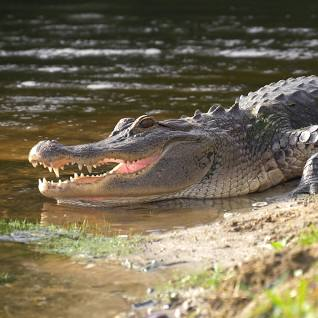

Alligator

Alligators are large reptiles known for their powerful jaws, semi-aquatic lifestyle, and prehistoric lineage.
Physical Characteristics
- Size: Alligators can vary in size, with males reaching lengths of up to 13-15 feet and females being slightly smaller.
- Jaws: They have strong jaws filled with sharp teeth designed for gripping and crushing prey.
- Armor: Alligators have bony plates, called osteoderms, embedded in their skin, providing protection.
Behavior and Habitat
- Habitat: Alligators are found in freshwater habitats such as swamps, marshes, rivers, and lakes across the southeastern United States and China.
- Thermoregulation: They are ectothermic (cold-blooded) and rely on external sources of heat to regulate their body temperature.
- Semi-Aquatic Lifestyle: Alligators spend much of their time in the water but also bask on land to warm up and regulate body temperature.
Diet
Alligators are carnivores and feed on a variety of prey, including fish, birds, small mammals, and other reptiles.
Conservation Status
American alligators were once listed as "Endangered" but have made a successful recovery and are now classified as "Least Concern."
Interesting Facts
- Cold-Weather Behavior: Alligators enter a period of dormancy during cold months and can survive freezing conditions by sticking their snouts above water to breathe.
- Parental Care: Female alligators build nests and guard them until the eggs hatch. She may also carry her hatchlings to water in her mouth.
- Sound Production: Alligators produce various vocalizations, including roars, bellows, and hisses, to communicate and establish territory.